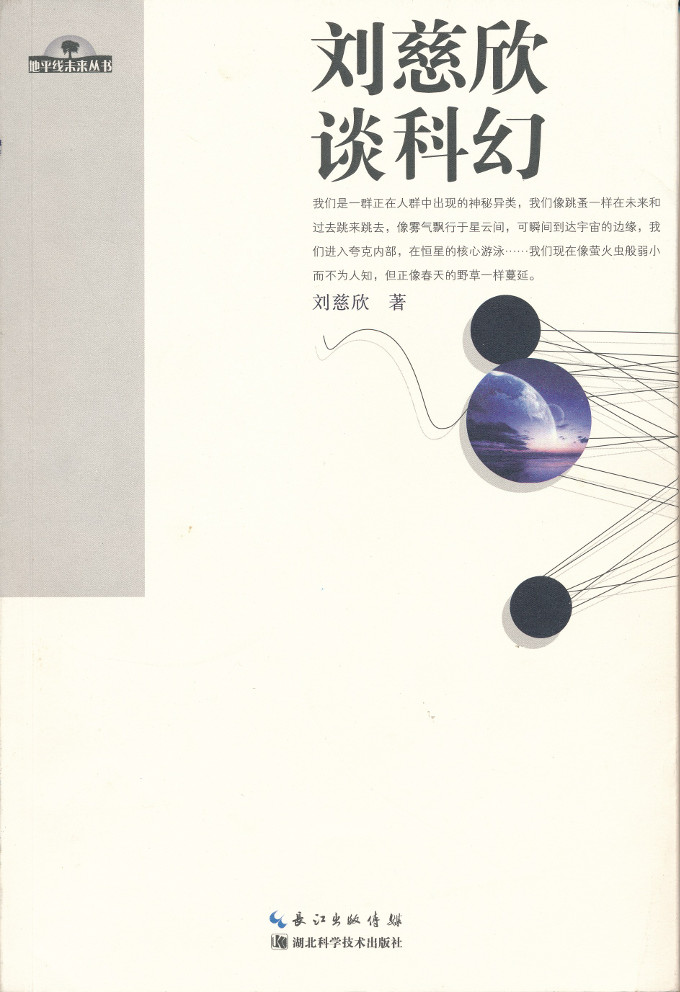

注：【】部分为笔者心得，非原文摘抄。
- 在死亡面前的不公平在人类历史上第一次初露端倪，当部分富有的幸运儿在无梦的睡眠中踏上永生之路时，尘世间那亿万双嫉妒的眼睛让人不寒而栗。
- 从社会学角度看，一个永生的世界充满着我们现在难以想象的东西，可能在政治、经济、哲学、文化等方面彻底颠覆现有的人类社会形态，出现一个全新的文明。
- 不要嫌养生麻烦，不要拒绝健康的生活方式，多活一年就多一点机遇，差一步差万步。
- 只要民主理念被大多数人所认可，国家机器就不会被独裁者控制。
- 以线性思维预测未来是危险的。
- 要对文明的未来进行稍稍严肃些的超远期预测，都必须在数学和物理规律限定的范围内进行，否则就不是预测而是神话了。
- 对于生命和文明在宇宙中的前景，任何想象都是软弱无力的。
- 主流文学描写上帝已经创造的世界，科幻文学则向上帝一样创造世界再描写它。
- 小说必须有细节。
- 人类的社会史，就是一部人的地位的上升史。
- 中国社会面临的真正灾难是科学精神在大众中的丧失。
- 科学的力量在于大众对她的理解。
- 创新是文学的生命，更是科幻的生命，面对着这个从大海见一滴水的文学，我们首先要有大海的胸怀！
- 从社会使命来说，科幻不应是一块冷冰的石头，无情地打碎人类的所有梦想，而应是一支火炬，在寒夜的远方给人以希望；从文学角度讲，真正的美最终还是要从光明和希望中得到。
- 把美好的未来展示给人们，是科幻文学所独有的功能。
- 最美的科幻小说应该是乐观的。
- 科幻文学所需要的知识结构是一种“顶天立地”型的结构。“顶天”是说作者需要对最前沿最深刻最抽象的知识内核有透彻的理解，“立地”是需要作者对最底层最繁琐的技术细节要有生动的感受。
- 科幻与主流文学的一大区别在于，它所描写的现实大都是“非凡”的很难亲历。
- 要在自己创造的宇宙规律下使世界自洽，这是写科幻时最难的思想体操，是造物主的活儿。
- 任何一门艺术的存在，都是因为它有着某种别的艺术不具备、并且无法代替的东西，这种东西就是这门艺术的灵魂。
- 科幻小说的成功，在很大程度上取决于幻想的奇丽与震撼的程度。
- 科学之美和技术之美，构成了科幻小说的美学基础。离开了这个基础，科幻小说很难展现出自己独特的美。
- 科幻的宗教感情就是对宇宙的宏大神秘的深深的敬畏感。
- 在忙碌和现实的现代社会中，人们的目光大都局限在现实社会这样一个盒子中，很少望一眼太空。
- 科幻小说最大的优势和魅力是描写人和宇宙的关系。宇宙在科幻小说中，应该是和人同样重要的主人公。
- 科幻文学是唯一在科学和理性时代能够给读者提供真实感的幻想文学，这种真实感是科幻魅力很重要的一个方面。
- 文学要做的是表现和感受，而不是思考。
- 科幻的世界设定需遵循科学规律，它是超现实的，但不能超自然。与奇幻相比，科幻的世界设定简洁严谨，有科学定律的影子。
- 科幻是内容的文学，不是形式的文学。
- 黑暗中丢失了爸爸妈妈的手，是每一个孩子最恐惧的事。
- 科幻小说所描写的灾难，往往是整个人类种族的灾难。——詹姆斯·冈恩
- 写小说的技巧在于，你拉着读者的手带他们进入一个黑暗的世界，并安慰他们说不要害怕，但当他们真正感到害怕时，你就把手松开。——尼尔·李察·盖曼
- 如果一篇科幻小说想表达的东西能够被作者或读者用几句话总结出来，那这篇小说肯定是失败的。
- 记忆中的过去不一定是真实的。
- 平行宇宙是一个超越一切的藉慰，当每一个抉择都使宇宙分裂为二时，抉择便也不存在，就像只手遮住刺眼的阳光并没有熄灭太阳。在被不可穿越的时空之膜分割的所有世界泡中，所有可能都在发生，于是错误和遗憾也不复存在，每一个痛苦都在异世界投下幸福的影子。当这种藉慰最终被证实后，不知是幸运还是不幸。
- 科技神奇感的消失，是科幻文学所面临的最致命的打击，也是科幻衰落的最根本的原因。